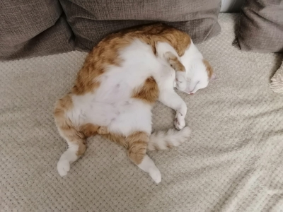

Это мой котт.. спит где хочет

Кошка спит, раскинув лапы, на спине
Такая поза кошки во время сна говорит о том,
что животное чувствует себя вполне комфортно. Кошка сыта, ей не холодно,
а может быть даже жарко. Ей уютно и безопасно рядом со своими хозяевами. Обычно,
в таких позах любят спать маленькие котята. Их жизнь абсолютно бесхлопотная,
они в сытости и в безопасности рядом с мамой-кошкой.
Живот — это самое уязвимое место кота. И если кот живет в квартире,
где над ним каждую минуту может начать издеваться собака,
он выберет другие позы сна кошек. Что означает для кота спасть на спине?
Только полный мир и полную гармонию со всеми домочадцами.
Если ваш питомец так спит, то вам есть чем гордиться.